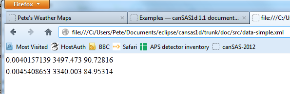

Various topics have been considered or presented in considering this standard. Some are described below.
This section presents two examples of XML Data Files adhering to the cansas1d:1.1 standard.
The first file (data-simple.xml) is a basic example and the second file (cansas1d.xml) uses almost all the allowed elements. In each, though, most of the data has been removed to clarify the structure.
The example data file data-simple.xml shows just the basic elements of the cansas1d:1.1 standard. Only a single data point has been shown to more clearly show the other structure. The data file is actually an excerpt from the bimodal-test1.xml (http://www.cansas.org/trac/browser/1dwg/trunk/bimodal-test1.xml) example file in the main distribution.
1 2 3 4 5 6 7 8 9 10 11 12 13 14 15 16 17 18 19 20 21 22 23 24 25 26 27 28 29 30 31 32 33 34 35 36 37 38 39 40 41 42 43 44 45 46 47 48 49 50 | <?xml version="1.0"?>
<?xml-stylesheet type="text/xsl" href="ascii3col.xsl" ?>
<SASroot version="1.1"
xmlns="urn:cansas1d:1.1"
xmlns:xsi="http://www.w3.org/2001/XMLSchema-instance"
xsi:schemaLocation="urn:cansas1d:1.1
http://www.cansas.org/formats/1.1/cansas1d.xsd"
>
<SASentry>
<Title>SAS bimodal test1</Title>
<Run>1992</Run>
<SASdata>
<Idata>
<Q unit="1/A">0.0040157139</Q>
<I unit="1/cm">3497.473</I>
<Idev unit="1/cm">90.72816</Idev>
</Idata>
<Idata>
<Q unit="1/A">0.0045408653</Q>
<I unit="1/cm">3340.003</I>
<Idev unit="1/cm">84.95314</Idev>
</Idata>
</SASdata>
<SASsample>
<ID>bimodal-test1</ID>
</SASsample>
<SASinstrument>
<name>simulated SAS calculation</name>
<SASsource>
<radiation>artificial</radiation>
<wavelength unit="A">1.00</wavelength>
</SASsource>
<SAScollimation/>
<SASdetector>
<name>calculation</name>
</SASdetector>
</SASinstrument>
<SASprocess>
<name>create the SAS data</name>
<date>1992-01-31</date>
<term name="shape">spheres</term>
<term name="contrast" unit="1/cm^4">100E20</term>
<term name="Background" unit="1/cm">0.1</term>
<term name="sMult" unit="cts/cm">1000.0</term>
<term name="sNoise" unit="fraction">0.25</term>
<SASprocessnote/>
</SASprocess>
<SASnote/>
</SASentry>
</SASroot>
|
The stylesheet (ascii3col.xsl) identified on line 2 of data-simple.xml is a very basic XSLT. When data-simple.xml is opened in a browser (from a directory containing both data-simple.xml and ascii3col.xsl), the result looked like this:
View of data-simple.xml in a browser after XSLT transformation using ascii3col.xsl.
The example data file cansas1d.xml (http://www.cansas.org/trac/browser/1dwg/trunk/examples/cansas1d.xml) shows examples of most of the elements of the cansas1d:1.1 standard. Only a single data point has been provided here to more clearly show the other structure in the data file.
1 2 3 4 5 6 7 8 9 10 11 12 13 14 15 16 17 18 19 20 21 22 23 24 25 26 27 28 29 30 31 32 33 34 35 36 37 38 39 40 41 42 43 44 45 46 47 48 49 50 51 52 53 54 55 56 57 58 59 60 61 62 63 64 65 66 67 68 69 70 71 72 73 74 75 76 77 78 79 80 81 82 83 84 85 86 87 88 89 90 91 92 93 94 95 96 97 98 99 100 101 102 103 104 105 106 107 108 109 110 111 112 113 114 115 116 117 118 119 120 121 122 123 124 | <?xml version="1.0"?>
<?xml-stylesheet type="text/xsl" href="cansas1d.xsl" ?>
<SASroot version="1.1"
xmlns="urn:cansas1d:1.1"
xmlns:xsi="http://www.w3.org/2001/XMLSchema-instance"
xsi:schemaLocation="urn:cansas1d:1.1 http://www.cansas.org/formats/1.1/cansas1d.xsd"
>
<SASentry>
<Title></Title>
<Run></Run>
<SASdata>
<Idata>
<Q unit="1/A">0.02</Q>
<I unit="1/cm">1000</I>
<Idev unit="1/cm">3</Idev>
<Qdev unit="1/A">0.01</Qdev>
<Qmean unit="1/A"><!-- Qmean is optional --></Qmean>
<Shadowfactor><!-- Shadowfactor is optional --></Shadowfactor>
</Idata>
</SASdata>
<SASsample>
<ID>SI600-new-long</ID>
<thickness unit="mm">1.03</thickness>
<transmission>0.327</transmission>
<temperature unit="C">0.0000</temperature>
<position>
<x unit="mm">10.00</x>
<y unit="mm">0.00</y>
</position>
<orientation>
<roll unit="degree">22.5<!-- was: sample_orientation --></roll>
<pitch unit="degree">0.020<!-- was: sample_offset_angle --></pitch>
</orientation>
<details>
<!-- was: sample_prep -->
http://chemtools.chem.soton.ac.uk/projects/blog/blogs.php/bit_id/2720
</details>
</SASsample>
<SASinstrument>
<name>canSAS instrument</name>
<SASsource>
<radiation>neutron</radiation>
<beam_size>
<x unit="mm">12.00</x>
<y unit="mm">12.00</y>
</beam_size>
<beam_shape>disc</beam_shape>
<wavelength unit="A">6.00</wavelength>
<wavelength_min unit="nm">0.22</wavelength_min>
<wavelength_max unit="nm">1.00</wavelength_max>
<wavelength_spread unit="percent">
14.3
</wavelength_spread>
</SASsource>
<SAScollimation>
<aperture name="source" type="radius">
<size>
<x unit="mm">50</x>
</size>
<distance unit="m">11.000<!-- was: distance_coll --></distance>
</aperture>
<aperture name="sample" type="radius">
<size>
<x unit="mm">0</x>
</size>
</aperture>
</SAScollimation>
<SASdetector>
<name>fictional hybrid</name>
<SDD unit="m">
<!-- sample-to-detector distance -->
4.150
</SDD>
<orientation>
<roll unit="degree">0.00</roll>
<pitch unit="degree">0.00</pitch>
<yaw unit="degree">0.00</yaw>
</orientation>
<beam_center>
<x unit="mm">322.64</x>
<y unit="mm">327.68</y>
</beam_center>
<pixel_size>
<x unit="mm">5.00</x>
<y unit="mm">5.00</y>
</pixel_size>
</SASdetector>
</SASinstrument>
<SASprocess>
<name>spol</name>
<date>04-Sep-2007 18:35:02</date>
<term name="radialstep" unit="mm">10.000</term>
<term name="sector_width" unit="degree">180.0</term>
<term name="sector_orient" unit="degree">0.0</term>
<term name="MASK_file">USER:MASK.COM</term>
<SASprocessnote>
AvA1 0.0000E+00 AsA2 1.0000E+00 XvA3 1.0526E+03 XsA4
5.2200E-02 XfA5 0.0000E+00
</SASprocessnote>
<SASprocessnote>
S... 13597 0 2.26E+02 2A 5mM 0%D2O Sbak 13594 0 1.13E+02
H2O Buffer
</SASprocessnote>
<SASprocessnote>V... 13552 3 1.00E+00 H2O5m</SASprocessnote>
</SASprocess>
<SASprocess>
<name>NCNR-IGOR</name>
<date>03-SEP-2006 11:42:47</date>
<description />
<term name="average_type">Circular</term>
<term name="SAM_file">SEP06064.SA3_AJJ_L205</term>
<term name="BKD_file">SEP06064.SA3_AJJ_L205</term>
<term name="EMP_file">SEP06064.SA3_AJJ_L205</term>
<term name="DIV_file">SEP06064.SA3_AJJ_L205</term>
<term name="MASK_file">SEP06064.SA3_AJJ_L205</term>
<term name="ABS:TSTAND">1</term>
<term name="ABS:DSTAND" unit="mm">1</term>
<term name="ABS:IZERO">230.09</term>
<term name="ABS:XSECT" unit="mm">1</term>
<SASprocessnote/>
</SASprocess>
<SASnote />
</SASentry>
</SASroot>
|
There are many example data files in the repository. They may be viewed with a WWW browser, [1] downloaded, or the entire directory may be checked out to create a local copy for you.
>>> svn co http://www.cansas.org/svn/1dwg/tags/v1.1/examples cansas1d-examples
| [1] | http://www.cansas.org/svn/1dwg/tags/v1.1/examples (or http://www.cansas.org/svn/1dwg/trunk/examples) |
This section presents examples of XML Stylesheets useful for the cansas1d:1.1 standard. XML Stylesheets (XSLT) are used to transform XML documents into other documents such as XML documents, xhtml documents, or even ASCII text. XML stylesheets also can be used to extract metadata from XML files.
The ascii3col.xsl stylesheet displays all the Idata blocks in a cansas1d:1.1 file in 3-column ASCII form. Be careful using this stylesheet on files with multiple SASdata or SASentry blocks since this stylesheet assumes there is only one of each of these. While it is the most common case to have only one of each, some of the examples have multiple data sets. This stylesheet will concatenate all of the Idata.
1 2 3 4 5 6 7 8 9 10 11 12 13 14 15 16 17 18 19 20 21 | <?xml version="1.0" encoding="utf-8" ?>
<xsl:stylesheet version="1.0"
xmlns:xsl="http://www.w3.org/1999/XSL/Transform"
xmlns:xsi="http://www.w3.org/2001/XMLSchema-instance"
xmlns:cs="urn:cansas1d:1.1"
xsi:schemaLocation="urn:cansas1d:1.1 http://www.cansas.org/formats/1.1/cansas1d.xsd"
>
<xsl:template match="/">
<html>
<table>
<xsl:for-each select="cs:SASroot/cs:SASentry/cs:SASdata/cs:Idata">
<tr>
<td><xsl:value-of select="cs:Q"/></td>
<td><xsl:value-of select="cs:I"/></td>
<td><xsl:value-of select="cs:Idev"/></td>
</tr>
</xsl:for-each>
</table>
</html>
</xsl:template>
</xsl:stylesheet>
|
The cansas1d.xsl (at about 500 lines, it is too large to print here) is the standard XSL stylesheet for cansas1d:1.1 files. It shows all available SASdata and metadata, separated by the different SASentry blocks.